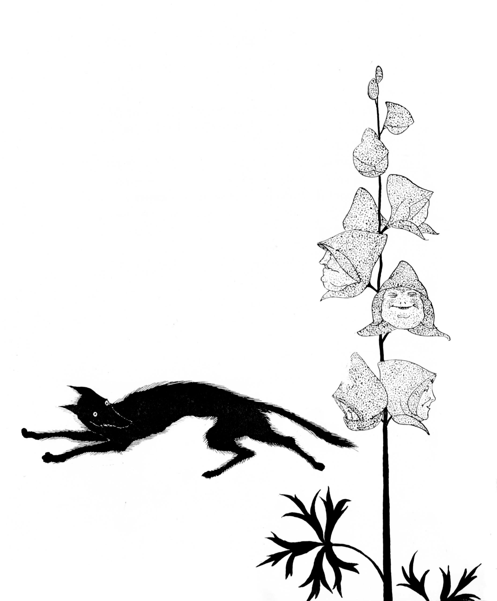
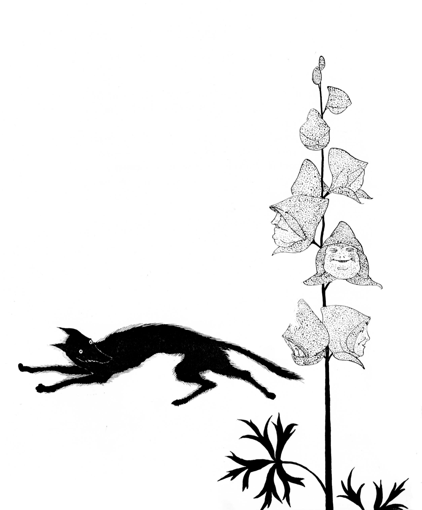
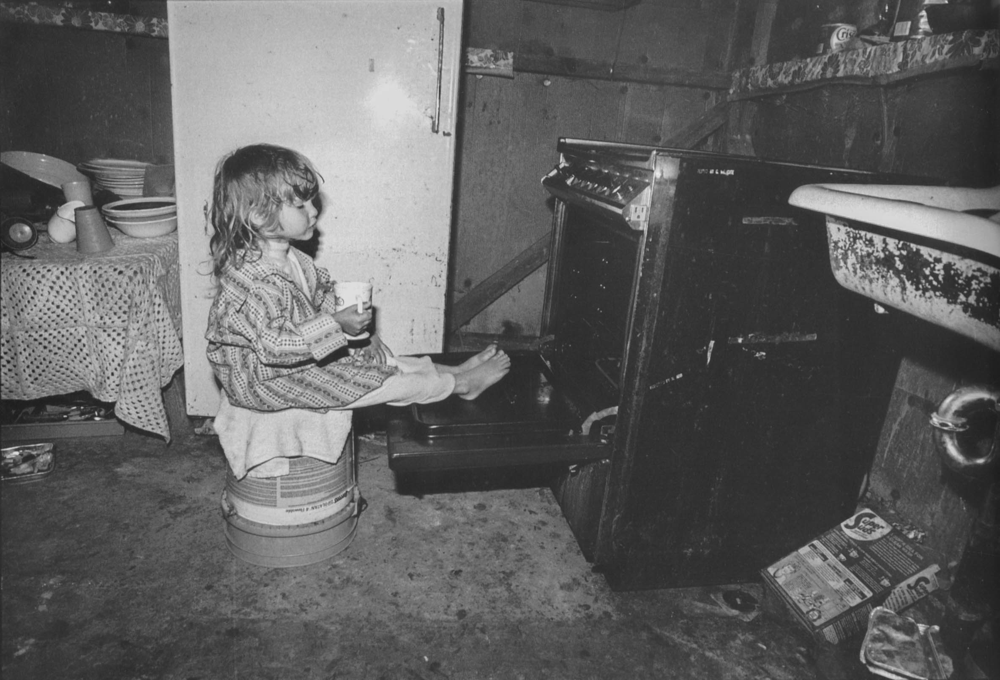
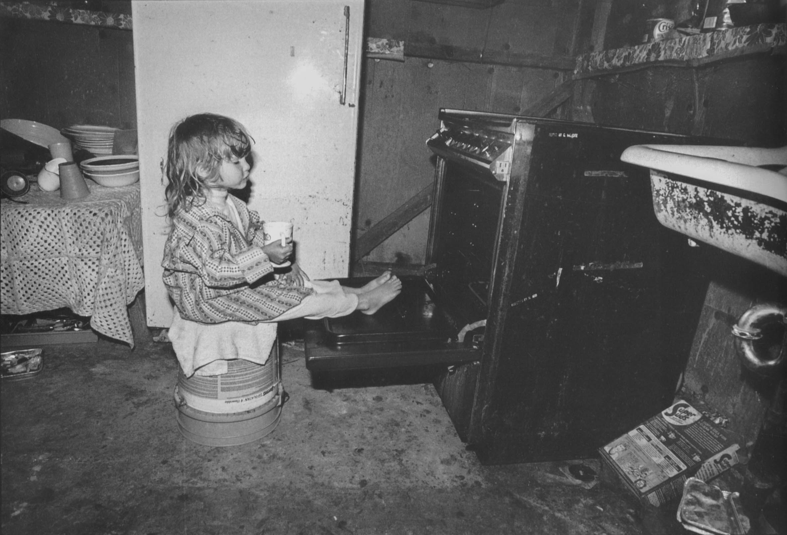
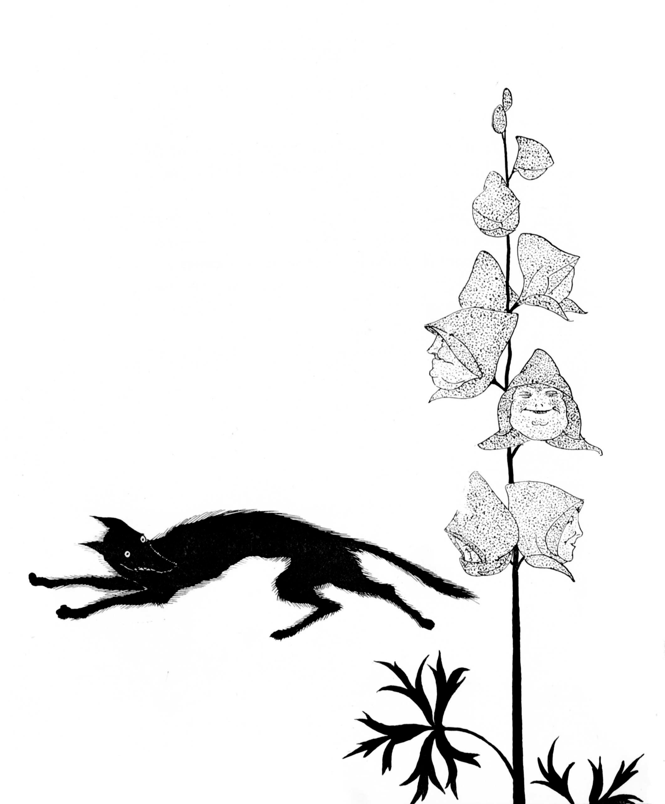
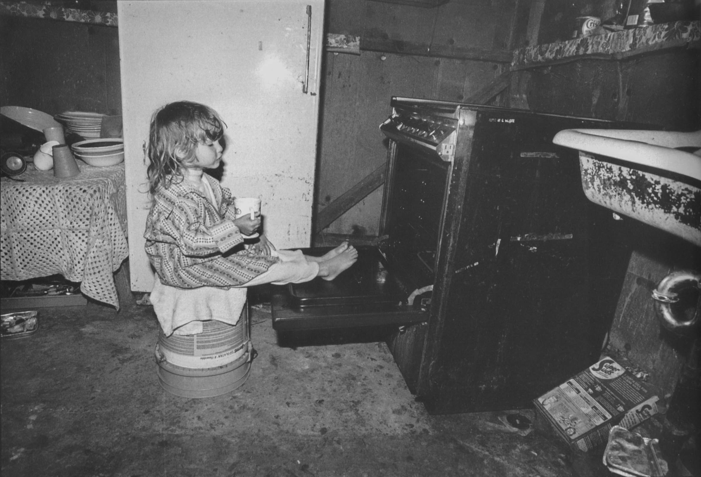
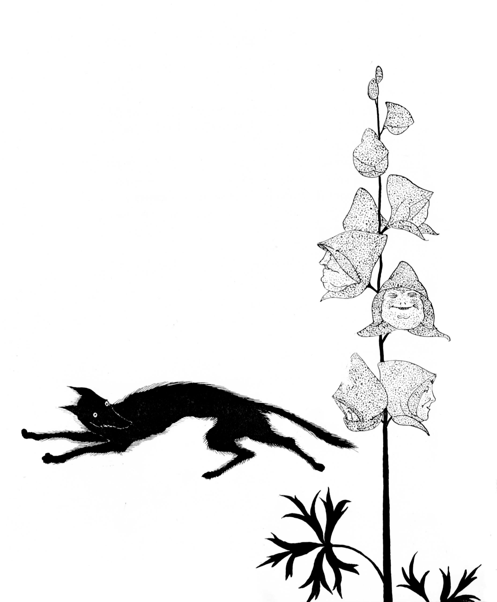
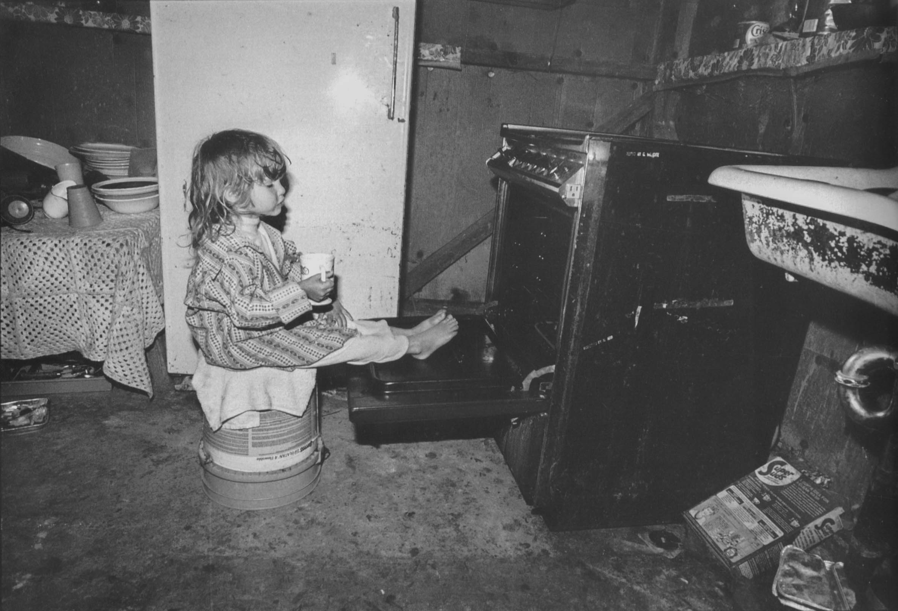

 



 



A provision of endless apparatus, a bustle of infinite inquiry and research, may be employed to evade and shuffle off real labor--the real labor of thinking.
When it is said, therefore, that a librarian is a keeper of books, it must be determined first of which of these two books he is the keeper. Is he, for example, the keeper of the small, clothbound object [. . .], or is he the keeper of that very different object created in many mens minds before, and now in yours, by this--these words, these symbols, images, perceptions [. . .].
It makes a difference whether the book is the cloth and paper or the intellectual image. If it is the physical book of which the librarian is the keeper, then the character of his profession is obvious enough. He is a custodian as all keepers of physical objects are custodians, and his obligations are a custodian’s obligations. He is a sort of check boy in a parcel room of culture. His duty is to receive the priceless packages confided to him by the past and to redeliver them to the future against the proper stub. To perform that obligation he must be reliable, orderly, industrious, and clever. He must devise infallible and complicated ticket systems to find the parcels on the shelves. He must read the notations of origin and ownership in a dozen tongues. He must guard the wrappers from the risks of time and theft. And matches an men’s thumbs. He must be courteous and patient with the claimants. And for the rest he has no duty but to wait. If no one comes, if no one questions, he can wait.
But if it is not the physical book but the intellectual book of which the librarian is keeper, then his profession is a profession of a very different kind. It is not the profession of the custodian, for the intellectual book is not a ticketed parcel which can be preserved by keeping it from mice and mildew on the shelf. The intellectual book is an imagined object in the mind which can be preserved only by preserving the minds perception of its presence. Neither is the librarians profession the profession of the check boy who receives and guards and redilivers,--receives from the past, guards again the present, and redelivers to the future,--for the intellectual book is not a deposit of the past which the future has a right to call and claim. The intellectual book is a construction of the spirit, and the constructions of the spirit exist in one time only--in that continuing and endless present which is Now. If it is the intellectual book rather than the physical book of which the librarian is a keeper, then the profession of the librarian is not and cannot be the neutral, passive, negative profession of the guardian and fiduciary, but must become instead the affirmative and advocating profession of the attorney for a cause. For the intellectual book is the Word. And the keepers of the Word, whether they so choose or not, must be its partisans and advocates. The Word was never yet protected by keeping it in storage in a warehouse: the preservation of the Word is now, as it has always been, a cause--perhaps the greatest--not, I think, the least in danger in this time.